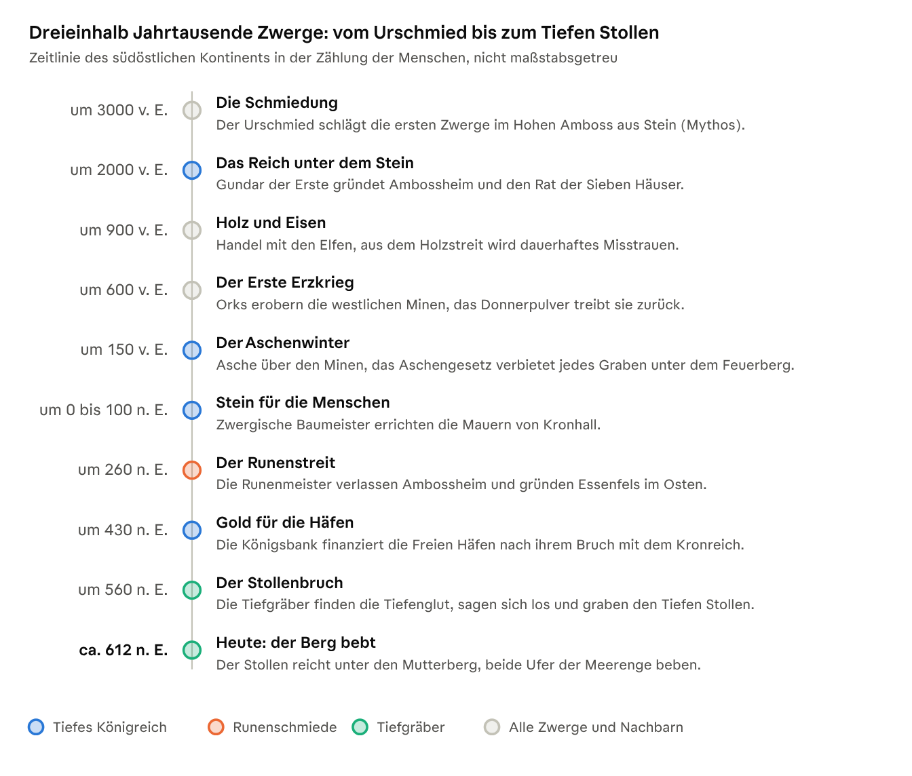

Die Zwerge – Völker und Fraktionen
Nov 16, 2026 · @Henry
Überblick
Die Zwerge sind die besten Schmiede der Welt und die reichsten Händler. Sie bewohnen den südöstlichen Kontinent zwischen Innerem Meer und Südsee, getrennt von den Orks im Westen und den Elfen im Norden durch schmale Meerengen. Sie liefern den Menschen Waffen und Schwarzpulver, und ihr Gold steckt in jeder Bank der Freien Häfen. Doch seit um 560 n. E. graben die Tiefgräber den Tiefen Stollen unter den Mutterberg der Orks. Sie wissen, dass sie ihn wecken, aber die Gier nach Erz ist stärker.
Gemeinsame Eigenschaften aller Zwerge
Klein, breit und ausdauernd: Zwerge sind einen Kopf kleiner als Menschen, aber schwerer und zäher. Sie arbeiten tagelang ohne Licht und tragen Rüstungen, unter denen ein Mensch zusammenbräche. Menschen sagen: Elfen sind die besseren Magier, Zwerge die besseren Schmiede, Orks die stärkeren Krieger.
Meisterschmiede: Niemand schmiedet wie die Zwerge. Ihre Klingen, Rüstungen, Werkzeuge und Kanonen sind die besten der Welt, und jedes Volk außer Orks und Untoten kauft sie.
Geborene Händler: Zwerge handeln so gut, wie sie schmieden. Mit Menschen und Elfen treiben sie seit Jahrhunderten Handel, ihr Gold steckt in den Banken der Freien Häfen, und ihr Wort im Schuldbuch gilt als sicherer als jeder Königseid.
Langes Gedächtnis: Ein Zwerg wird etwa dreihundert Jahre alt und vergisst nichts. Jede Schuld, jeder Eid und jede Kränkung steht im Schuldbuch seines Hauses, und sie wird beglichen, notfalls von den Enkeln.
Gier nach Erz und Gold: Kein Volk liebt Metall so sehr. Ein Zwerg misst sein Ansehen an seinem Hort und an dem, was er geschmiedet hat. Diese Gier ist ihre größte Stärke und ihre gefährlichste Schwäche.
Begraben im Stein: Tote Zwerge werden in den Ahnenhallen in Stein eingemauert, das Grab mit Runen versiegelt. Darum steht kaum ein Zwerg als Untoter auf. Über dem Grab steht ein Steinbild, der Steinahne, zu dem die Nachfahren sprechen.
Todfeinde von Orks und Untoten: Seit dem Ersten Erzkrieg um 600 v. E. hassen Zwerge und Orks einander bis aufs Blut. Zwischen ihnen gibt es keine Verhandlung, nur Vernichtung. Die Untoten sind für Zwerge ebenso Todfeinde: Wer Tote aus dem Stein holt, schändet die Steinahnen.
Aussehen: Gedrungen, mit langen, geflochtenen Bärten, die auch viele Frauen tragen. Die Fraktionen unterscheiden sich sichtbar: Das Tiefe Königreich trägt Gold in Bart und Rüstung, die Runenschmiede hat rußgeschwärzte Hände und leuchtende Runen auf der Haut, die Tiefgräber sind bleich vom Leben unter Tage und tragen Grubenlampen am Helm.
Kultur: Zwerge leben in Häusern, großen Sippen mit eigener Halle, eigenem Schuldbuch und eigenem Steinahnen. Wichtige Fragen entscheidet der Rat der Sieben Häuser. Ein Eid wird auf einen Schwurstein geschworen und gilt, solange der Stein steht. Handwerk ist Ehre: Wer ein Meisterstück schmiedet, darf seinen Namen in die Halle meißeln.
Sprache: Die Zwerge sprechen Khazrun, eine harte Sprache voller Kehllaute, die in Stein geritzt wird. Alle drei Fraktionen beherrschen die Reichszunge der Menschen, denn kein Volk handelt so viel mit ihnen.
Magie: Zwerge wirken Runenmagie. Ein Runenmeister schneidet Runen in Metall oder Stein und bindet so Kraft hinein: Härte in eine Klinge, Feuer in eine Kanone, Schutz in ein Tor. Runenmagie wirkt langsam und nur in Dingen, nie im freien Raum. Die Runenschmiede hütet sie als Geheimnis der Gilde. Die anderen beiden Fraktionen haben nur schwache Gaben: Die Steinsprecher des Königreichs hören die Steinahnen, die Erzspürer der Tiefgräber hören das Erz im Fels.
Geschichte
Die drei Fraktionen entstanden aus einem einzigen Zwergenreich, dem Reich unter dem Stein, das zweimal zerbrach: einmal am Streit um die Runen, einmal am Streit um den Tiefen Stollen. Die Jahreszahlen folgen der Zählung der Menschen nach der Einigung (n. E.), heute ist ungefähr 612 n. E. Die Zwerge selbst zählen die Könige seit Gundar dem Ersten.

Zeitlinie der Zwerge · 10 Ereignisse
Die Zeitlinie zeigt, wie jeder Bruch des Reiches mit Erz begann und wie eng das Schicksal der Zwerge am Mutterberg der Orks hängt.
Die Schmiedung (Mythos, um 3000 v. E.): Die Zwerge erzählen, der Urschmied habe die ersten ihres Volkes im Herzen des Hohen Ambosses aus Stein geschlagen und mit Feuer gehärtet. Darum kehren sie im Tod in den Stein zurück.
Das Reich unter dem Stein (um 2000 v. E.): König Gundar der Erste vereint die Häuser und gründet Ambossheim im Hohen Amboss. Der Rat der Sieben Häuser entsteht, und der ganze Kontinent wird ein Reich aus Hallen, Minen und Straßen unter dem Fels.
Holz und Eisen (um 900 v. E.): Zwergische Schiffe handeln mit dem Immergrünen Reich der Elfen. Die Zwerge wollen Holz für ihre Stollen und Schmieden, die Elfen geben nur, was der Wald abwirft. Aus dem Handel wird ein dauerhaftes Misstrauen.
Der Erste Erzkrieg (um 600 v. E.): Die Heere des orkischen Großbanners setzen über die Meerenge und erobern die westlichen Minen. Zwei Generationen lang wird gekämpft. Dann bringen die Runenmeister das Donnerpulver, das erste Schwarzpulver, und die Zwerge treiben die Orks zurück ins Meer. Seitdem sind Zwerge und Orks Erbfeinde.
Der Aschenwinter (um 150 v. E.): Der Mutterberg der Orks bricht aus. Asche fällt auf die westlichen Minen, die Ernten in den Tälern verderben, und drei Winter lang hungert das Reich. König Hartmut der Graue erlässt das Aschengesetz: Kein Zwerg darf je unter den Feuerberg graben.
Stein für die Menschen (um 0 bis 100 n. E.): Die Menschen einen sich und werden die besten Kunden der Zwerge. Zwergische Baumeister errichten die Mauern von Kronhall, zwergische Schmiede liefern Waffen und Rüstungen.
Der Runenstreit (um 260 n. E.): Der Hochkönig verlangt, dass die Runenmeister ihre Geheimnisse der Krone übergeben. Die Gilde weigert sich, löscht die Essen in Ambossheim und zieht in die Ostberge. Dort gründet sie Essenfels, die freie Stadt der Runenschmiede.
Die Lange Nacht (ca. 340 n. E.): Die Zwerge schicken kein Heer gegen die Untoten, aber sie verkaufen den Menschen Waffen. Die Runenschmiede schmiedet Klingen für den Orden der Flamme, und seitdem gilt der Orden als ihr engster Kunde. Die ersten Runenmeister des Ordens lernen das Runenschneiden in Essenfels, doch ihre Flammenrunen wirken nur durch den Glauben.
Gold für die Häfen (um 430 n. E.): Nach ihrem Bruch mit dem Kronreich brauchen die Freien Häfen Geld. Die Königsbank von Ambossheim leiht es ihnen, und ein zwergischer Gildenherr sitzt seitdem im Hafenthing.
Der Stollenbruch (um 560 n. E.): Die Erzspürer der westlichen Minen hören unter der Meerenge eine Ader glühenden Erzes, die Tiefenglut. Sie führt nach Westen, unter den Mutterberg. Der Hochkönig beruft sich auf das Aschengesetz und verbietet das Graben. Die westlichen Häuser sagen sich los, nennen sich die Tiefgräber und beginnen den Tiefen Stollen.
Heute (um 612 n. E.): Der Stollen reicht bis unter die Flanken des Mutterbergs. Die Erde bebt auf beiden Seiten der Meerenge, und die Tiefgräber fördern mehr Tiefenglut denn je. Der Hochkönig verurteilt den Stollen öffentlich, doch seine Schatzmeister kaufen das Erz heimlich auf.
Tiefes Königreich
Das Tiefe Königreich ist der Rest des alten Reiches unter dem Stein: ein Königtum aus Hallen und Festungen im Herzen des Kontinents, regiert von einem Hochkönig und dem Rat der Sieben Häuser. Es hat die meisten Krieger, die stärksten Festungen und das meiste Gold der Zwerge. Wer mit den Zwergen ein Bündnis schließen will, spricht zuerst in Ambossheim vor.
Lebensraum: Gebirge und Hochgipfel in der Mitte des Kontinents, von den Pässen im Norden bis zu den vereisten Gipfeln im Süden. Zwischen den Bergen liegen geschützte Täler mit Feldern und Weiden, die das Reich ernähren. Die meisten Zwerge leben unter dem Fels.
Wappen und Farben: Ein goldener Amboss unter einer Krone auf steingrauem Grund. Farben: Steingrau, Gold, Dunkelrot.
Kultur und Werte
Der Hochkönig stammt aus dem Haus Gundar. Er herrscht, doch ohne den Rat der Sieben Häuser darf er weder Krieg führen noch Steuern erheben.
Jedes Haus führt ein Schuldbuch. Was darin steht, wird beglichen, ob Gold, Gefallen oder Blut.
Die Steinahnen sind heilig. Wer ein Ahnenbild zerstört, wird aus dem Reich verbannt.
Gold ist Ehre. Die reichsten Häuser, die Goldherren, haben im Rat das größte Gewicht.
Das Aschengesetz gilt seit 150 v. E.: Kein Zwerg gräbt unter den Feuerberg. Die Tiefgräber gelten darum als Eidbrecher.
Wahlspruch: „Was der Stein hält, hält ewig.“
Glaube und Magie: Das Königreich ehrt den Urschmied und die Steinahnen. Seine Steinsprecher hören in den Ahnenhallen die Stimmen der Toten, deuten Beben und segnen Festungen. Echte Runenmagie hat das Königreich seit dem Runenstreit nicht mehr, es muss Runenwaffen bei der Runenschmiede kaufen.
Herrschaft und Anführer
Der Hochkönig herrscht auf Lebenszeit, der Rat der Sieben Häuser hält ihn im Zaum.
| Person | Rolle | Kurzbeschreibung |
|---|---|---|
| Hochkönig Gernot Graubart | Herr des Tiefen Königreichs | Alt und vorsichtig, hält am Aschengesetz fest und will die Tiefgräber zurück unter die Krone zwingen |
| Thronerbin Hadwig Eisenhand | Tochter des Königs | Ungeduldig und kriegerisch, will den Stollen mit Gewalt schließen und die Orks für immer besiegen |
| Schatzmeister Dankwart Goldzunge | Herr der Königsbank | Leiht den Freien Häfen Geld und kauft heimlich die Tiefenglut der Tiefgräber auf |
| Schildherr Hagen Felswall | Heerführer der Eisenwacht | Hat im Grenzkrieg gegen die Staubreiter gekämpft, vertraut keinem Ork und keinem Elfen |
Wichtige Orte
Ambossheim: Die Königsstadt im Hohen Amboss und Hauptsitz, mit Hallen über hundert Ebenen tief im Berg.
Der Hohe Amboss: Der höchste Berg des Kontinents, in dessen Herzen der Urschmied die ersten Zwerge geschlagen haben soll.
Die Halle der Steinahnen: Die größte Ahnenhalle, in der alle Könige seit Gundar ruhen.
Die Königsbank: Das Schatzhaus von Ambossheim, das halb die Welt verschuldet.
Der Zollpass: Festung am Pass nach Westen, an der die Krone das Erz der Tiefgräber verzollt.
Die Weißen Gipfel: Vereiste Berge im Süden, Grenze des Reiches und Zuflucht im Krieg.
Militär
Eisenwacht: Schwere Infanterie mit Schild und Hammer, die stärkste Verteidigung aller Völker.
Axtbrüder: Zahlreiche Krieger mit Axt und Kettenhemd, das Rückgrat des Heeres.
Armbrustschützen: Fernkämpfer, die von Mauern und Pässen aus schießen.
Widderreiter: Leichte Reiter auf Bergwiddern, schnell in Gebirge und Schnee.
Steinsprecher: Unterstützer, die Moral stärken und Beben vorhersagen.
Stärken: Festungen und Belagerungsabwehr, schwere Infanterie, Gold und Handel, Bündnisse mit Menschen, große Bevölkerung für Zwerge.
Schwächen: Langsam, kaum Magie ohne die Runenschmiede, schwache Flotte, der Rat entscheidet träge, Goldherren sind bestechlich.
Runenschmiede
Die Runenschmiede ist eine freie Gilde von Runenmeistern und Pulvermachern im Osten, die sich im Runenstreit von der Krone losgesagt hat. Sie hütet das Geheimnis der Runen und des Schwarzpulvers. Ihre Waffen sind die besten der Welt, ihre Krieger die wenigsten der Zwerge.
Lebensraum: Die Ostberge mit ihren Erzadern und Essen, dazu die Nordküste an der Meerenge zu den Elfen und ein Streifen Wald und Grasland an der Ostküste, der Holz und Kohle liefert. Vor der Küste liegt die Funkeninsel, auf der das Pulver erprobt wird.
Wappen und Farben: Ein glühender Hammer, umgeben von einem Kreis aus sieben Runen, auf rußschwarzem Grund. Farben: Rußschwarz, Glutorange, Messing.
Kultur und Werte
Die Gilde kennt nur Meister, Gesellen und Lehrlinge. Rang verdient man durch Meisterstücke, nicht durch Geburt oder Gold.
Runen werden nur mündlich vom Meister an den Gesellen weitergegeben. Wer ein Runengeheimnis verrät, verliert die Hände.
Essenfels ist eine freie Stadt. Kein König, kein Goldherr und kein Rat darf der Gilde befehlen.
Die Gilde verkauft Waffen an jeden, der zahlt, außer an Orks und Untote.
Jede Rune braucht Zeit. Ein Runenmeister schneidet in seinem Leben nur wenige große Runen.
Wahlspruch: „Die Rune vergisst nicht, was der Hammer schwor.“
Glaube und Magie: Die Runenschmiede ehrt den Urschmied als ersten Meister, nicht als Gott. Ihre Runenmeister sind die einzigen echten Magier der Zwerge. Sie schneiden Runen der Härte, des Feuers, des Schutzes und des Donners in Klingen, Rüstungen, Tore und Kanonen. Die stärksten Runen brauchen Tiefenglut, das Erz aus dem Tiefen Stollen.
Herrschaft und Anführer
Die Gilde folgt einer Großmeisterin, die von allen Meistern gewählt wird und abtritt, wenn ein jüngerer Meister ein besseres Meisterstück vorlegt.
| Person | Rolle | Kurzbeschreibung |
|---|---|---|
| Großmeisterin Irmgard Funkenschlag | Herrin der Runenschmiede | Stolz und unabhängig, hat nie einen Hochkönig in Essenfels empfangen und kauft Tiefenglut, ohne zu fragen |
| Wolfram der Pulvermacher | Meister des Donnerpulvers | Liefert dem Orden der Flamme und den Freien Häfen Schwarzpulver und Kanonen, wird dabei sehr reich |
| Runenmeister Ortwin Siebenhammer | Ältester der Gilde | Hat als Einziger eine Rune aus reiner Tiefenglut geschnitten und hört seitdem darin ein Flüstern |
| Gesellin Gunda | Junge Runenschneiderin | Will die Runen allen Zwergen öffnen, um das Reich wieder zu einen |
Wichtige Orte
Essenfels: Die freie Stadt der Gilde und Hauptsitz, gebaut um hundert Essen, deren Rauch nie abreißt.
Die Runenhalle: Das Herz der Gilde, in dem die Meister die Runen lehren und kein Fremder je stand.
Die Funkeninsel: Eine kleine Insel vor der Ostküste, auf der das Donnerpulver erprobt wird. Ihre Felsen sind schwarz verbrannt.
Der Kohlenwald: Wald an der Ostküste, der Holz und Kohle für die Essen liefert und daher ständig schrumpft.
Das Nordtor: Festung und Handelshafen an der Nordküste gegenüber den Sümpfen der Schattenblüte. Hier gehen Waffen zu Elfen und Menschen, und hier landen die Schmuggler.
Militär
Runenwachen: Wenige Krieger in Runenrüstung, die fast nichts verwundet.
Donnerbüchsen: Schützen mit Schwarzpulverwaffen, die stärksten Fernkämpfer der Zwerge.
Runenkanonen: Geschütze, deren Runen das Pulver doppelt so weit tragen, verheerend gegen Mauern.
Runenmeister: Magier, die Waffen in der Schlacht aufladen und Tore versiegeln.
Feuerschüttler: Pioniere, die Pulverminen unter feindliche Mauern legen.
Stärken: Stärkste Magie und beste Fernkämpfer der Zwerge, Belagerung, Schwarzpulver, wertvoller Handel mit Waffen.
Schwächen: Kleinste Bevölkerung, teure Einheiten, kaum Flotte, abhängig von Kohle und Tiefenglut, wird von der Krone als Abtrünnige behandelt.
Tiefgräber
Die Tiefgräber sind ein Bund von Bergmannshäusern im Westen, die sich um 560 n. E. vom König losgesagt haben, um den Tiefen Stollen zu graben. Sie fördern mehr Erz als das ganze übrige Volk und verkaufen es an jeden. Sie wissen, dass ihr Stollen den Mutterberg der Orks weckt. Doch die Tiefenglut ist das wertvollste Erz der Welt, und ihre Gier ist stärker als ihre Angst.
Lebensraum: Das Hügelland und die Berge im Westen des Kontinents, durchlöchert von alten und neuen Minen. An der Westküste liegen Ackerland und Steppe, die die Bergleute ernähren. Jenseits der Meerenge im Westen liegt das Land der Orks, und unter dieser Meerenge führt der Tiefe Stollen hindurch.
Wappen und Farben: Eine gekreuzte Spitzhacke und Grubenlampe auf schwarzem Grund, darunter eine glühende Erzader. Farben: Schwarz, Kupfer, Glutrot.
Kultur und Werte
Wer gräbt, hat das Recht auf das, was er findet. Das Grabrecht steht für die Tiefgräber über jedem Königsgesetz.
Jede Schicht teilt ihren Fund. Ein Bergmann, der heimlich Erz einsteckt, wird in einen leeren Schacht gesperrt.
Sie verachten das Aschengesetz als Angst alter Männer. Der Berg gehöre dem, der ihn öffnet.
Seit dem Ersten Erzkrieg halten sie die westlichen Minen gegen die Orks. Sie haben die meisten Toten im Kampf gegen sie begraben und hassen sie am tiefsten.
Sie sprechen nicht gern vom Klopfen im Berg. Wer im Stollen von Angst redet, verliert seine Schicht.
Wahlspruch: „Tiefer, immer tiefer.“
Glaube und Magie: Die Tiefgräber glauben an den Urschmied, aber mehr noch an ihr Glück. Ihre Erzspürer hören das Erz im Fels und führen die Stollen zu den reichsten Adern. Sie hören auch, dass der Berg über dem Stollen antwortet, und schweigen darüber.
Ihr größtes Geheimnis: Die Tiefenglut ist kein gewöhnliches Erz. Sie ist die erstarrte Glut des Mutterbergs, in der nach dem Glauben der Orks die Ahnen wohnen. Jeder Brocken, den die Tiefgräber fördern, reißt ein Stück aus dem Herzen des Berges, und der Berg antwortet mit Beben. Das Flüstern, das Runenmeister Ortwin in seiner Rune hört, und das Klopfen, das Ahnenmutter Morga im Berg hört, sind zwei Seiten derselben Sache. Grubenherr Hildebrand ahnt es und schweigt, denn die Wahrheit würde den Stollen beenden.
Herrschaft und Anführer
Die Tiefgräber folgen einem Grubenherrn, den die Obersteiger der großen Minen wählen. Er bleibt, solange das Erz fließt.
| Person | Rolle | Kurzbeschreibung |
|---|---|---|
| Grubenherr Hildebrand Schwarzerz | Herr der Tiefgräber | Hat den Stollenbruch angeführt, kennt die Gefahr und gräbt trotzdem weiter, weil er sonst gestürzt würde |
| Obersteigerin Kuni Lampenlicht | Leiterin des Tiefen Stollens | Hat die Ader der Tiefenglut entdeckt und will als Erste das Herz des Berges sehen |
| Erzspürer Alberich | Ältester Erzspürer | Hört im Stollen Stimmen, die nicht von Zwergen stammen, und fürchtet, dass der Berg lebt |
| Kapitän Ruprecht Salzbart | Herr der Erzflotte | Bringt das Erz an die Freien Häfen und kämpft auf der Meerenge gegen die Rostsegel der Staubreiter |
Wichtige Orte
Kluftheim: Die Grubenstadt in einer gewaltigen Kluft und Hauptsitz, mit Aufzügen, Schmelzhütten und Lagerhallen voller Erz.
Der Tiefe Stollen: Der Stollen unter der Meerenge, der nach Westen bis unter die Flanken des Mutterbergs reicht. Der Eingang heißt der Stollenmund und ist eine Festung.
Erzhafen: Hafen an der Westküste, von dem die Erzschiffe auslaufen. Ziel jeder Ork-Flotte.
Die Alten Minen: Die westlichen Minen, die im Ersten Erzkrieg an die Orks fielen und zurückerobert wurden. Voller Gräber und Gerippe.
Die Kornsteppe: Ackerland an der Westküste, das die Bergleute ernährt und dem Ascheregen schutzlos ausgeliefert ist.
Militär
Grubenwächter: Bergleute mit Hacke und schwerem Schild, zäh und zahlreich.
Tunnelräuber: Pioniere, die unter feindlichen Linien graben und von unten angreifen.
Erzspürer: Unterstützer, die feindliche Tunnel und Hinterhalte im Fels spüren.
Kohlenwerfer: Schützen, die Töpfe mit brennendem Pech und Pulver werfen.
Erzschiffe: Schwer gepanzerte Lastschiffe mit Geschützen, die einzige nennenswerte Flotte der Zwerge.
Stärken: Erz und Wirtschaft, Tunnelkrieg, beste Flotte der Zwerge, Kampf unter Tage, Erfahrung gegen Orks.
Schwächen: Von Königreich und Elfen verachtet, offene Küste gegenüber den Orks, wenig Magie, der Stollen hebt die Glutleiste und bringt das eigene Land in Gefahr.
Beziehungen
Nach außen treten die Zwerge als ein Volk auf, doch jede Fraktion führt ihren eigenen Handel und ihre eigenen Kriege. Gemeinsam handeln sie nur gegen die Orks.
Untereinander
Tiefes Königreich und Runenschmiede: Kalter Frieden. Die Krone nennt die Gilde Abtrünnige, kauft aber ihre Runenwaffen. Die Gilde braucht das Gold der Königsbank. Ein Wort des Königs, das die Freiheit der Gilde anerkennt, könnte den Runenstreit beenden.
Tiefes Königreich und Tiefgräber: Öffentlich Feindschaft, heimlich Geschäft. Der Hochkönig nennt die Tiefgräber Eidbrecher, sein Schatzmeister kauft ihre Tiefenglut. Thronerbin Hadwig will den Stollen mit Gewalt schließen.
Runenschmiede und Tiefgräber: Ein Zweckbündnis. Die Gilde braucht Tiefenglut für ihre stärksten Runen und fragt nicht, woher sie kommt. Die Tiefgräber bekommen dafür Runenwaffen gegen die Orks.
Zu den anderen Völkern
| Volk | Tiefes Königreich | Runenschmiede | Tiefgräber |
|---|---|---|---|
| Menschen | Engste Partner, die Königsbank finanziert die Freien Häfen, Zwerge bauten die Mauern von Kronhall | Liefert dem Orden der Flamme Klingen und allen Menschen Schwarzpulver | Verkaufen Erz an die Freien Häfen |
| Elfen | Guter Handel in Gold und Kredit, Goldherren kaufen heimlich Nektar | Wichtigster Handelspartner über das Nordtor, verkauft den Dornenklingen Stahl und Pulver | Feindschaft, die Elfen hassen den Stollen |
| Orks | Erbfeind, nur Vernichtung | Erbfeind, Rivalen um Schmiedekunst gegen den Glutstahl des Aschenclans | Erbfeind, der Stollen weckt ihren heiligen Berg |
| Untote | Todfeind, nur Vernichtung | Todfeind, keine Waffen für Untote | Todfeind, nur Vernichtung |
Die Menschen: Mit den Menschen sind Handel und Bündnisse möglich, aber keine Vereinigung. Zwerge liefern Waffen, Rüstungen und Schwarzpulver und helfen den Menschen am meisten gegen die Orks. Der Orden der Flamme ist der beste Kunde der Runenschmiede. Die Freien Häfen hängen an der Königsbank, und ein zwergischer Gildenherr sitzt im Hafenthing. Das Kronreich ist neutral, obwohl Zwerge einst seine Mauern bauten. Ein Bündnis mit den Zwergen senkt die Ork-Bedrohung der Menschen schneller. Ein Bündnis mit den Menschen bringt den Zwergen Gold, Korn und Schiffe gegen die Orks.
Die Elfen: Die Elfen misstrauen den Zwergen seit dem Holzstreit, weil Zwerge Bäume fällen und unter Wäldern graben. Handel und Bündnisse sind trotzdem möglich, aber jede Elfenfraktion verlangt etwas anderes. Die Dornenklingen kaufen Stahl für den Krieg gegen die Fäulnis und sind am leichtesten zu gewinnen. Die Hüter schließen ein Bündnis nur, wenn der Tiefe Stollen versiegelt ist, denn die Glut des Mutterbergs treibt die Welke des Weltenbaums. Die Schattenblüte schmuggelt Nektar und Gifte über die Meerenge, und reiche Goldherren des Königreichs kaufen den Nektar, um länger zu leben. Ein Bündnis mit den Elfen bringt Heilkräuter und Späher, ein Bündnis mit den Zwergen bringt den Elfen Stahl und Schwarzpulver gegen die Untoten.
Die Orks: Orks und Zwerge hassen sich bis aufs Blut, und zwischen ihnen gibt es keine Verhandlung, nur Vernichtung. Seit dem Ersten Erzkrieg um 600 v. E. streiten beide Völker um Erz und den Ruf der besten Schmiede. Die Staubreiter plündern zwergische Erzschiffe, der Aschenclan sieht im Stollen eine Schändung seiner Ahnen, die Grünen Banner hassen die Zwerge, weil sie die Menschen bewaffnen. Jeder Ork-Clan kann den Zweiten Erzkrieg gegen die Zwerge führen, und die Zwerge können ihn genauso gegen die Orks führen.
Die Untoten: Die Untoten sind Todfeinde der Zwerge, und sie verhandeln mit niemandem. Gegen Zwerge bleibt ihnen nur die Eroberung, den Zwergen gegen sie nur die Vernichtung. Der Kontinent der Zwerge liegt am weitesten von ihnen entfernt, doch die Bleiche Krone schätzt zwergische Festungen und Rüstungen. Weil Zwerge in versiegelten Steingräbern ruhen, steht kaum einer als Gebundener auf. Gegen den Kult der Bleichen Ewigkeit sind Zwerge nicht immun. Er findet Anhänger in allen drei Fraktionen, vor allem unter Goldherren und Grubenherren, die ihren Hort nicht zurücklassen wollen. Wer auf verseuchtem Land stirbt, erhebt sich auch als Zwerg als Gebundener.
Spielwerte
Die Werte folgen demselben System wie bei den anderen Völkern: Skala 0 (keine) bis 5 (herausragend), jede Fraktion hat zusammen 18 Punkte. Die Schwierigkeit folgt demselben Muster: eine Massenfraktion für Einsteiger, eine Fraktion, die Geschick verlangt, und eine teure Elitefraktion. Alle Zwerge sind stark in Wirtschaft und Verteidigung und schwach auf See.
| Wert | Tiefes Königreich | Tiefgräber | Runenschmiede |
|---|---|---|---|
| Schwierigkeit | Leicht | Mittel | Schwer |
| Nahkampf | 4 | 3 | 3 |
| Fernkampf | 2 | 2 | 4 |
| Magie | 1 | 1 | 4 |
| Seemacht | 1 | 3 | 1 |
| Wirtschaft | 4 | 4 | 3 |
| Bevölkerung | 3 | 3 | 1 |
| Moral | 3 | 2 | 2 |
| Summe | 18 | 18 | 18 |
Schwierigkeitsgrade
Tiefes Königreich, leicht: Viele Krieger, starke Festungen und viel Gold. Die Feinde müssen über Berge und Pässe kommen, und Fehler lassen sich mit Gold ausgleichen. Ideal für Einsteiger.
Tiefgräber, mittel: Reich nur, wenn man den Stollen klug nutzt. Jede Runde mit offenem Stollen bringt Tiefenglut und hebt die Glutleiste. Man muss abwägen zwischen Gier und Untergang und dabei die offene Küste gegen die Orks halten.
Runenschmiede, schwer: Die mächtigsten, aber wenigsten und teuersten Einheiten. Jede Rune braucht Zeit, Kohle und Tiefenglut, und jeder gefallene Runenmeister fehlt für Jahrzehnte. Fehler sind kaum zu korrigieren.
Fraktionsboni und Ressourcen
Tiefes Königreich, „Was der Stein hält“: Festungen und Pässe verteidigen sich mit +50 %. Die Eisenwacht weicht nie zurück, solange sie in einer Festung steht. Neue Ressource Hort: Gold aus Handel, Zöllen und der Königsbank. Der Hort bezahlt die Eisenwacht und kauft Runenwaffen. Er kann an andere Völker verliehen werden: Ein Schuldner zahlt jede Runde Zinsen und verliert viel Ansehen, wenn er das Königreich angreift. Sinkt der Hort zu tief, stimmen die Goldherren im Rat gegen den König.
Tiefgräber, „Tiefer, immer tiefer“: Tunnelräuber können unter Bergen hindurch angreifen und Mauern umgehen. Unter Tage kämpfen alle Einheiten mit +25 %. Neue Ressource Erz: Es kommt jede Runde aus den Minen, baut Einheiten und Schiffe und ist die wichtigste Handelsware der Zwerge. Solange der Tiefe Stollen offen ist, liefert er zusätzlich Tiefenglut, doppelt so viel wert wie Erz, und hebt jede Runde die Glutleiste.
Runenschmiede, „Die Rune vergisst nicht“: Runenkanonen und Feuerschüttler richten gegen Mauern +50 % Schaden an. Pulverhandel mit Menschen bringt Hort für alle Zwerge und Ansehen. Neue Ressource Runen: Runenmeister schneiden sie jede Runde aus Erz und Kohle, mit Tiefenglut doppelt so schnell. Eine Rune verbessert eine Einheit dauerhaft, versiegelt ein Tor oder lädt eine Kanone. Reichen die Runen nicht, schweigen die Kanonen.
Gemeinsamer Volksbonus Zwerge, „Begraben im Stein“: Gefallene Zwerge ruhen in versiegelten Steingräbern und können nicht als Untote zurückkehren, außer sie sterben auf verseuchtem Land: Dort gilt die Fäulnis, und auch Zwerge erheben sich als Gebundene. Gegen den Kult sind Zwerge nicht immun: Der Kultwert steigt in allen Zwergenprovinzen, am schnellsten bei großem Hort und hohem Erzfieber. In Gebirge und unter Tage verteidigen sich alle Zwergeneinheiten mit +25 %. Das Schuldbuch: Wer einen Vertrag mit Zwergen bricht, verliert bei allen Zwergen dauerhaft Ansehen. Meisterschmiede: Alle Zwergeneinheiten verteidigen sich mit +25 %, und zwergische Waffen bringen im Handel doppelt so viel wie die anderer Völker. Handelsverträge mit Menschen und Elfen bringen den Zwergen +25 % Ertrag.
Städte, Dörfer und Häfen
Von Henry festgelegt (16.11.2026): Jede Fraktion hat eine Hauptstadt und bis zu zehn Städte. Zu jedem Gebiet gehören eigene Dörfer. Hauptstadt, Städte und Dörfer produzieren die Ressourcen der Fraktion. Nach der Vereinigung fließen ihre Erträge in einen gemeinsamen Vorrat des ganzen Volkes.
Hauptstadt: Sie produziert am meisten, ist Sitz der Anführer und bildet die stärksten Einheiten und Helden aus. Fällt sie, hat die Fraktion verloren.
Städte: Sie produzieren Gold, Truppen und die eigene Ressource der Fraktion. Eine eroberte Stadt produziert für den Eroberer.
Dörfer: Sie liefern Nahrung und Rohstoffe wie Holz, Stein und Erz an die Städte ihres Gebiets. Wer die Dörfer eines Gebiets verliert, schwächt dessen Städte.
Häfen: Nur eine Stadt am Meer kann einen Hafen haben, auch die Hauptstadt. Häfen bringen Handel und Gold. Nur über einen Hafen können Armeen, Helden und Heldengruppen über das Meer gebracht werden. Wer keinen eigenen Hafen hat, braucht einen Verbündeten oder Vertragspartner mit Hafen und Schiffen.
| Fraktion | Hauptstadt | Häfen | Was die Siedlungen liefern |
|---|---|---|---|
| Tiefes Königreich | Ambossheim | Keine eigenen Häfen, das Königreich liegt im Gebirge. Sein Handel läuft über den Zollpass und die Häfen der anderen Fraktionen | Bergstädte und Zölle liefern den Hort, Dörfer im Hochland Nahrung und Stein |
| Runenschmiede | Essenfels | Das Nordtor an der Nordküste, der wichtigste Handelshafen zu den Elfen, dazu die Funkeninsel | Schmiedestädte liefern Runen, Dörfer im Kohlenwald Kohle und Holz |
| Tiefgräber | Kluftheim | Erzhafen an der Westküste, von dem die Erzflotte ausläuft | Minendörfer liefern Erz und Tiefenglut, die Kornsteppe Nahrung |
Das Tiefe Königreich hat keinen Hafen. Für Handel und Feldzüge über das Meer braucht es die Runenschmiede oder die Tiefgräber. Das ist ein Grund, warum der König den Stollen öffentlich verurteilt, aber den Erzhafen nicht angreift.
Die Städte der Fraktionen
Jede Fraktion hat eine Hauptstadt und zehn Städte. „Hafen“ heißt, dass die Stadt am Meer liegt und einen Hafen hat.
Tiefes Königreich: Hauptstadt Ambossheim. Städte: Zollburg (am Zollpass), Gundarsheim, Silberkuppe, Felsenhort, Goldtiefe, Eisenwacht, Siebenhäuser, Kristallgrund, Hochwarte, Granitheim. Keine davon hat einen Hafen.
Runenschmiede: Hauptstadt Essenfels. Städte: Nordtor (Hafen), Messinghafen (Hafen), Funkenhafen (Hafen, auf der Funkeninsel), Köhlerheim (im Kohlenwald), Hammerstatt, Runenstein, Glutesse, Pulverhall, Donnerfels, Zunftberg.
Tiefgräber: Hauptstadt Kluftheim. Städte: Erzhafen (Hafen), Salzbucht (Hafen), Westhort (Hafen), Stollenmund (Festung am Tiefen Stollen), Altmin (bei den Alten Minen), Kornfurt (in der Kornsteppe), Kupferkluft, Lampenheim, Tiefenwacht, Rußtal.
Die Dörfer der Fraktionen
Zu jeder Stadt gehören Dörfer, zur Hauptstadt drei, zu jeder anderen Stadt zwei. In Klammern steht, was das Dorf liefert.
Tiefes Königreich
| Stadt | Dörfer und Ertrag |
|---|---|
| Ambossheim (Hauptstadt) | Königsgrube (Gold), Hallenhof (Pilze), Steinahnweiler (Stein) |
| Zollburg | Passweiler (Zoll), Saumhof (Maultiere) |
| Gundarsheim | Gundarsgrube (Silber), Ziegenalm (Ziegen) |
| Silberkuppe | Silberstollen (Silber), Kuppenhof (Gerste) |
| Felsenhort | Hortgrube (Gold), Bergbach (Fisch) |
| Goldtiefe | Goldader (Gold), Tiefweiler (Pilze) |
| Eisenwacht | Eisengrube (Eisen), Wachtweiler (Gerste) |
| Siebenhäuser | Bierkeller (Bier), Ahnenweiler (Stein) |
| Kristallgrund | Kristallgrube (Edelsteine), Grundhof (Gerste) |
| Hochwarte | Gipfelalm (Ziegen), Adlerhorst (Späher) |
| Granitheim | Granitbruch (Stein), Talhof (Gerste) |
Runenschmiede
| Stadt | Dörfer und Ertrag |
|---|---|
| Essenfels (Hauptstadt) | Runenbruch (Runensteine), Kohlengrube (Kohle), Essenweiler (Nahrung) |
| Nordtor | Fischweiler (Fisch), Kaiweiler (Handelswaren) |
| Messinghafen | Kupferweiler (Kupfer), Zinngrube (Zinn) |
| Funkenhafen | Salpetergrube (Salpeter), Schwarzfels (Schwefel) |
| Köhlerheim | Meilerweiler (Kohle), Harzwald (Harz) |
| Hammerstatt | Eisenbruch (Eisen), Wasserhammer (Werkzeug) |
| Runenstein | Meißelweiler (Runensteine), Schieferbruch (Stein) |
| Glutesse | Torfmoor (Brennstoff), Erzweiler (Erz) |
| Pulverhall | Schwefelquell (Schwefel), Salpeterhöhle (Salpeter) |
| Donnerfels | Donnerbruch (Stein), Gerstenweiler (Gerste) |
| Zunftberg | Gesellenweiler (Runen), Lehmgrube (Ton) |
Tiefgräber
| Stadt | Dörfer und Ertrag |
|---|---|
| Kluftheim (Hauptstadt) | Schachtweiler (Erz), Schmelzweiler (Eisen), Pilzgrotte (Nahrung) |
| Erzhafen | Kaiweiler (Handelswaren), Fischkate (Fisch) |
| Salzbucht | Salzsiede (Salz), Muschelweiler (Fisch) |
| Westhort | Klippenweiler (Fisch), Wachtkate (Späher) |
| Stollenmund | Glutschacht (Tiefenglut), Grubenlager (Erz) |
| Altmin | Gerippgrube (Erz), Gräberweiler (Stein) |
| Kornfurt | Ährenhof (Korn), Weizenweiler (Korn) |
| Kupferkluft | Kupferschacht (Kupfer), Grünspan (Kupfer) |
| Lampenheim | Ölweiler (Lampenöl), Dochtweiler (Wachs) |
| Tiefenwacht | Tiefschacht (Tiefenglut), Wetterschacht (Erz) |
| Rußtal | Rußhütte (Kohle), Steppenhof (Korn) |
Spielziele und Hauptquests
Das Hauptziel aller Zwerge ist, das Reich unter dem Stein zu erneuern und den alten Erbfeind zu überdauern. Gewonnen hat, wer die drei Fraktionen vereint und entweder den Stollen für immer versiegelt und das Volk durch Gold und Bündnisse sichert, oder das Herz des Berges hebt und die Orks vernichtet, bevor der Mutterberg ausbricht.
Das Erzfieber
Neben den Leisten der anderen Völker läuft für die Zwerge eine eigene Leiste von 0 bis 100: das Erzfieber. Es zeigt, wie sehr die Gier nach Erz und Gold das Volk beherrscht. Heute steht es bei 45: Fünfzig Jahre Stollen, Rekordförderung, heimliche Käufe des Schatzmeisters und der Nektar der Goldherren haben das Volk knapp unter die Krise getrieben.
| Erzfieber | |
|---|---|
| Steigt durch | Jede Runde ein wenig, schneller durch Tiefenglut aus dem Stollen, einen Hort weit über dem Bedarf, Bruderkriege um Minen, jede Nektarlieferung der Schattenblüte an die Goldherren (+1), Kredite, die Menschen platzen lassen (+5), und jeden Angriff der Orks auf den Stollen (+10), denn dann wollen die Zwerge ihr Erz erst recht zurück |
| Sinkt durch | Die Siegelrune nach der Vereinigung (senkt es auf null), das Versiegeln des Stollens (−15), zurückgezahlte Kredite und faire Handelsverträge mit Menschen (−5), ein Bündnis mit den Hütern der Elfen (−15, nur bei versiegeltem Stollen), Hort, der Menschen oder Elfen als Hilfe gegeben wird, und Siege gegen Orks und Untote |
| Bei 50 | Die Häuser streiten um jeden Fund: Verträge unter Zwergen kosten doppelt, Goldherren werden bestechlich, der Kultwert steigt schneller, und die Tiefgräber fördern doppelt. Die Glutleiste steigt jede Runde um 1 zusätzlich |
| Ab 75 | Der Goldrausch: Die Glutleiste steigt jede Runde um 2 zusätzlich. Verträge mit Menschen und Elfen kosten die Zwerge doppelt Ansehen, weil sie nur noch ans Erz denken |
| Bei 100 | Das Goldfieber: Die Häuser fallen übereinander her, und alle Zwergenspieler verlieren. Der Stollen wird ohne Halt vorangetrieben, die Glutleiste steigt sofort um 20 |
Das Erzfieber treibt eine Kette durch alle Völker: Je gieriger die Zwerge, desto schneller steigt die Glutleiste. Ab Glut 50 fällt Ascheregen auf Menschen, Orks, Elfen und Zwerge, und die Welke des Weltenbaums wächst schneller. Wer die Zwerge bremst, rettet also auch den Weltenbaum und die Ernten der Menschen.
| Volk | Senkt das Erzfieber | Hebt das Erzfieber |
|---|---|---|
| Menschen | Kredite der Königsbank zurückzahlen, fairer Handelsvertrag (−5) | Kredite platzen lassen (+5) |
| Elfen | Bündnis mit den Hütern, nur bei versiegeltem Stollen (−15) | Nektar der Schattenblüte an die Goldherren (+1 je Lieferung) |
| Orks | Nichts, mit Orks gibt es keine Verhandlung | Angriff auf den Stollen (+10) |
| Untote | Nichts | Indirekt über den Kult, der bei hohem Erzfieber schneller wächst |
Die Glutleiste aus Sicht der Zwerge
Neben dem Erzfieber hängt das Schicksal der Zwerge an der Glutleiste des Mutterbergs, die sie selbst nach oben treiben. Sie läuft von 0 bis 100 und bedroht alle lebenden Völker, nur die Untoten nicht.
| Was die Zwerge betrifft | |
|---|---|
| Steigt durch | Jede Runde, in der der Tiefe Stollen offen ist, und jede Förderung von Tiefenglut. Dazu alles, was sie auch bei den Orks hebt |
| Sinkt durch | Den Stollen versiegeln (einmalig −10, danach hebt der Stollen sie nicht mehr), die Siegelrune nach der Vereinigung (−20, danach steigt sie nur noch halb so schnell), Hilfe für hungernde Ork-Clans wie bei Menschen und Elfen ist ausgeschlossen, weil Zwerge mit Orks nicht handeln |
| Bei 50 | Ascheregen über der Kornsteppe und den Tälern: Nahrung der Zwerge schrumpft, die Tiefgräber verlieren die Hälfte ihrer Ernte |
| Bei 100 | Der zweite Aschenwinter: Die Zwerge verlieren für mehrere Runden die Hälfte ihrer Nahrung und Bevölkerung. Der Tiefe Stollen stürzt ein, und ein Tiefgräber-Spieler verliert |
Wer den Orks schadet, schadet auch dem Berg: Werden alle Ork-Clans vernichtet, kann niemand mehr das Ahnenfeuer singen, und nur noch die Siegelrune der Zwerge kann die Glutleiste senken.
Handel und Bündnisse mit Menschen und Elfen
Zwerge können mit Menschen und Elfen Handel treiben und Bündnisse schließen, sich aber nicht mit ihnen vereinen. Mit Orks gibt es weder Handel noch Vertrag, mit Untoten nichts.
| Abkommen | Tiefes Königreich | Tiefgräber | Runenschmiede |
|---|---|---|---|
| Handel | Jederzeit, am liebsten mit den Freien Häfen | Erz an jeden außer Orks und Untote | Waffen und Pulver, am liebsten an den Orden |
| Kredit | Verleiht Hort an Menschen und Elfen | Nimmt Kredit von Menschen, um die Krone nicht zu brauchen | Lehnt ab, die Gilde schuldet niemandem |
| Bündnis mit Menschen | Nach einem Handelsvertrag | Nur gegen Orks | Mit dem Orden der Flamme am leichtesten |
| Bündnis mit Elfen | Mit den Dornenklingen nach Stahlhandel | Erst wenn der Stollen versiegelt ist | Mit den Dornenklingen gegen die Untoten |
Ein Bündnis mit den Menschen senkt deren Ork-Bedrohung, ein Bündnis mit den Hütern der Elfen ist nur zu haben, wenn der Stollen geschlossen ist.
Unter einem Stein vereinen: Das Reich unter dem Stein
Jede Fraktion kann die anderen beiden auf zwei Wegen gewinnen:
Eroberung: Den Hauptsitz der anderen Fraktion einnehmen (Ambossheim, Essenfels oder Kluftheim). Die Fraktion wird unterworfen. Schnell, aber jeder Bruderkrieg lässt die Orks die Meerenge überqueren.
Diplomatie: Erst Handel, dann ein Bund, dann der Schwur am Amboss im Hohen Amboss. Das Königreich verlangt, dass die Tiefgräber das Aschengesetz wieder anerkennen. Die Runenschmiede verlangt, dass ihre Freiheit und das Geheimnis der Runen gewahrt bleiben. Die Tiefgräber verlangen ihr Grabrecht oder eine Entschädigung in Hort, wenn der Stollen schließt.
Ein vereintes Zwergenvolk erhält den Bonus „Das Reich unter dem Stein“: Alle Einheiten aller Fraktionen sind verfügbar, und erst dann kann die Siegelrune geschnitten werden, ein Ritual, das Steinsprecher, Runenmeister und Erzspürer gemeinsam am Stollenmund vollziehen.
Hauptquest Tiefes Königreich (leicht): „Was der Stein hält“
Der Zollpass: Das Erz der Tiefgräber verzollen und den Handel mit Menschen und Elfen über die Königsbank lenken.
Gold für die Häfen: Den Kredit an die Freien Häfen in ein Bündnis verwandeln. Das spiegelt die Quest „Gold und Eisen“ der Menschen.
Der Runenstreit: Die Runenschmiede zurückgewinnen, durch Anerkennung ihrer Freiheit oder durch die Belagerung von Essenfels.
Die Eidbrecher: Die Tiefgräber zum Schwur zwingen und entscheiden: den Stollen versiegeln oder unter der Krone weitergraben.
Das Reich unter dem Stein: Alle Fraktionen am Amboss vereinen und einen der beiden Siegwege vollenden.
Hauptquest Tiefgräber (mittel): „Tiefer, immer tiefer“
Erzhafen halten: Die Rostsegel der Staubreiter von der Westküste und den Erzschiffen vertreiben.
Das Klopfen im Fels: Mit Erzspürer Alberich die Stimmen im Stollen ergründen und entdecken, was die Tiefenglut wirklich ist.
Das Grabrecht: Den Strafzug von Thronerbin Hadwig abwehren oder der Krone einen Erzvertrag abhandeln.
Das Herz des Berges: Den Stollen bis ins Herz des Mutterbergs treiben oder ihn selbst versiegeln, bevor der Berg ausbricht.
Unter einem Stein: Alle Fraktionen vereinen, als Herren des Erzes oder als die, die den Stollen geschlossen haben.
Hauptquest Runenschmiede (schwer): „Die Rune vergisst nicht“
Die Funkeninsel: Mit Wolfram dem Pulvermacher die erste Runenkanone bauen.
Klingen für die Flamme: Ein Bündnis mit dem Orden der Flamme schließen.
Ortwins Flüstern: Herausfinden, was in der Rune aus Tiefenglut flüstert, und wählen: weiter mit Tiefenglut schmieden oder darauf verzichten.
Die freie Gilde: Die Krone dazu bringen, die Freiheit der Gilde anzuerkennen, oder Ambossheim bezwingen. Dann die Tiefgräber gewinnen.
Die Siegelrune: Mit dem vereinten Volk die Siegelrune am Stollenmund schneiden.
Neben-Hauptquest aller Fraktionen: „Der Zweite Erzkrieg“
Dies ist das Gegenstück zur gleichnamigen Quest der Orks. Jede Zwergenfraktion kann neben ihrer Hauptquest die Orks besiegen. Frieden gibt es nicht, nur die Vernichtung beendet den Krieg. Für den Sieg ist das keine Pflicht, auf dem Weg des Erzes aber unvermeidlich.
Die Meerenge: Die Rostsegel der Staubreiter auf See schlagen.
Der Brückenkopf: An der Ostküste des Ork-Kontinents landen oder durch den Tiefen Stollen angreifen.
Der Aschenthron: Den Aschenclan am Mutterberg besiegen.
Kragmar und Zhar-Kesh: Die Grünen Banner und die Staubreiter besiegen.
Das Ende des Erzkriegs: Alle Ork-Clans vernichten.
Belohnung „Erz der Feuerberge“: Sind die Orks vernichtet, gehören den Zwergen die Minen am Mutterberg und das Geheimnis des Glutstahls. Alle Zwergeneinheiten erhalten +10 % Schaden. Doch ohne Orks gibt es kein Ahnenfeuer mehr.
Siegbedingung: Alle drei Fraktionen unter einem Stein und entweder die Siegelrune geschnitten und das Erzfieber auf null, ein großer Hort und ein Bündnis mit Menschen oder Elfen (Weg des Steins) oder das Herz des Berges gehoben und alle Ork-Clans vernichtet, bevor die Glutleiste 100 erreicht. Wer das Herz hebt, löscht den Mutterberg: Die Glutleiste fällt sofort auf null, aber die Ahnen der Orks sind für immer verloren (Weg des Erzes). Dabei kann jedes Volk vernichtet werden.
Niederlage: Das Erzfieber erreicht 100, der eigene Hauptsitz fällt an ein anderes Volk, beim Königreich sinkt der Hort auf null, bei der Runenschmiede gehen die Runen aus, bei den Tiefgräbern das Erz. Für die Tiefgräber endet das Spiel auch, wenn die Glutleiste 100 erreicht.
Unterworfen oder Partner: Wer seinen Hauptsitz an eine andere Zwergenfraktion verliert, wird ihr unterworfen und hat verloren. Wer den Schwur am Amboss freiwillig leistet, wird Partner und gewinnt mit.
Gemeinsamer Sieg: Zwerge, Menschen und Elfen können im Bündnis gemeinsam gewinnen, wenn jedes Volk sein eigenes Siegziel erfüllt. Orks und Untote gewinnen immer allein.
Aufhänger für Geschichten
Das Herz des Berges: Obersteigerin Kuni Lampenlicht bricht in eine Halle aus glühendem Erz durch, größer als Ambossheim. Im selben Augenblick bebt der Mutterberg so stark wie seit dem Aschenwinter nicht. Hildebrand muss entscheiden, ob er weitergräbt.
Ortwins Flüstern: Die Rune aus reiner Tiefenglut spricht in Ghrash, der Sprache der Orks. Ortwin versteht kein Wort, doch er hört Namen. Er vertraut sich nur Gesellin Gunda an.
Der Schatzmeister: Dankwart Goldzunge kauft heimlich Tiefenglut von den Tiefgräbern, die sein König öffentlich verurteilt. Erfährt Thronerbin Hadwig davon, ist es Verrat. Erfährt es die Großmeisterin, wird es ein Druckmittel.
Nektar im Nordtor: Ein Goldherr stirbt, und in seinem Hort findet man Flaschen mit schwarzem Nektar aus Velasyr. Die Spur führt zu Giftmeister Tirel und zu den Schmugglern über die Meerenge.
Die Rostsegel vor Erzhafen: Brakk der Hungrige greift nicht die Westmark an, sondern die Erzflotte. Kapitän Ruprecht Salzbart findet an Bord eines gekaperten Schiffes eine Karte des Stollens.
Der Bleiche Goldherr: Ein alter Goldherr im Rat der Sieben Häuser will seinen Hort nicht den Erben lassen. Ein bleicher Fremder aus den Freien Häfen verspricht ihm, dass er ihn ewig behalten kann.
Offene Designfragen
Alle sieben Fragen der ersten Runde hat Henry am 16.11.2026 beantwortet (siehe unten). Auch die Werte des Erzfiebers sind festgelegt. Derzeit gibt es keine offenen Fragen.
Von Henry festgelegt
Jede Fraktion hat eine Schwierigkeit, Spielwerte von 0 bis 5 mit zusammen 18 Punkten, eine eigene Ressource und eine Hauptquest mit fünf Stufen.
Die drei Fraktionen der Zwerge können sich vereinen.
Jedes Volk kann vernichtet werden.
Tiefes Königreich in der Mitte, Runenschmiede im Osten, Tiefgräber im Westen an der Meerenge zu den Orks.
Die Tiefgräber graben seit etwa 560 n. E. den Tiefen Stollen unter den Mutterberg. Sie wissen, dass sie ihn wecken, aber die Gier nach Erz siegt.
Orks und Zwerge hassen sich bis aufs Blut. Nur die Vernichtung bringt Frieden. Der Erste Erzkrieg war um 600 v. E., der Zweite Erzkrieg ist eine Quest der Orks.
Die Zwerge liefern den Menschen Waffen und Schwarzpulver. Handel und Bündnisse mit Menschen und Elfen sind möglich, aber keine Vereinigung.
Die Elfen misstrauen den Zwergen, und die Schattenblüte schmuggelt über die Meerenge.
Die Untoten verhandeln mit niemandem.
Die Glutleiste des Mutterbergs bedroht alle lebenden Völker, also auch die Zwerge.
Die Tiefenglut ist die erstarrte Glut des Mutterbergs, in der die Ahnen der Orks wohnen.
Das Reich zerbrach in zwei Schritten: Runenstreit um 260 n. E., Stollenbruch um 560 n. E.
Die Zwerge haben eine eigene Leiste, das Erzfieber.
Zwerge sind gegen den Kult nicht immun.
Die Namen sind an alte deutsche Heldensagen angelehnt.
Die Siegelrune senkt die Glutleiste um 20, auf null bringen sie nur das Ahnenfeuer der Orks oder das Herz des Berges, das den Mutterberg löscht und die Ork-Ahnen für immer vernichtet.
Sieg und Niederlage (16.11.2026): Das Herz des Berges löscht den Mutterberg, Glut auf null, die Ork-Ahnen sind verloren. Kronreich hat die Ressource Korn, die Freien Häfen Gold, die Fäulnisbrut verliert bei Fleisch null. Wer seinen Hauptsitz an die eigene Volksfraktion verliert, hat verloren, wer sich diplomatisch anschließt, gewinnt mit. Menschen, Elfen und Zwerge können gemeinsam gewinnen, Orks und Untote nur allein. Sind alle Ork-Clans vernichtet, fällt die Ork-Bedrohung der Menschen auf null.
Die Runenschmiede hält die Nordküste an der Meerenge zu den Elfen mit dem Nordtor.
Zwerge sind Meisterschmiede und gute Händler mit Menschen und Elfen.
Orks und Untote sind Todfeinde der Zwerge.
Erzfieber: Start bei 45, ab 50 Glut +1 je Runde, ab 75 Glut +2 je Runde, bei 100 verlieren alle Zwergenspieler. Menschen, Elfen, Orks und Untote beeinflussen es wie in der Tabelle beschrieben.
Bildtafeln
Bildtafeln folgen, sobald es Bilder gibt. Wo eine Tafel vom Text abweicht, gilt der Text.